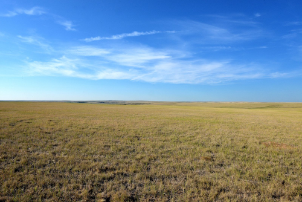
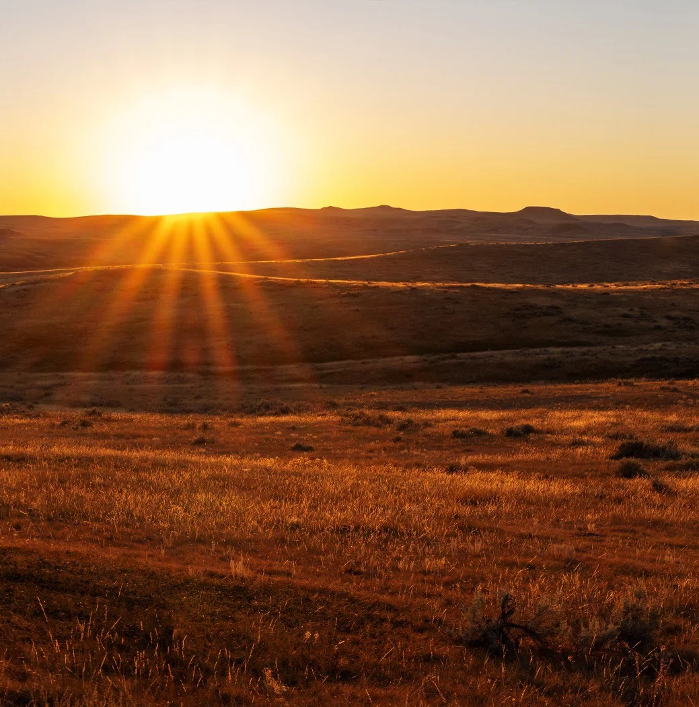

Introdução:
As pradarias mistas são formações vegetais encontradas principalmente na América do Norte, em regiões de transição entre áreas mais úmidas e áreas mais secas. Seu clima é geralmente temperado continental, com estações do ano bem definidas e variações consideráveis de temperatura.

Temperaturas
- Verão: costuma ser quente, podendo apresentar períodos de calor e seca.
- Inverno: é frio, com temperaturas negativas e ocorrência de neve em algumas regiões.
- Variação térmica: a diferença entre as temperaturas do verão e do inverno pode ser grande, devido à influência do clima continental.
Ventos e Umidade
As pradarias são áreas abertas, com poucas árvores. Por isso, os ventos podem circular livremente pela paisagem. Além disso, as temperaturas elevadas aumentam a evaporação da água, contribuindo para a redução da umidade do solo.
Fenômenos Climáticos
As secas são uma característica importante dessas regiões. Como as chuvas são relativamente escassas e irregulares, alguns períodos podem apresentar pouca água disponível para as plantas. Também podem ocorrer tempestades, nevascas no inverno e incêndios naturais, que influenciam a dinâmica da vegetação.
